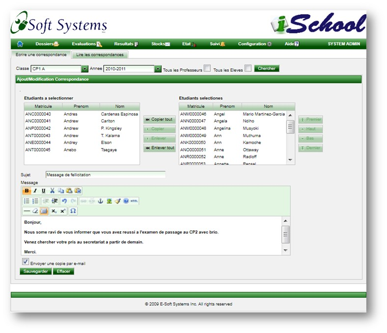

Correspondance
Cette page permet de diffuser un courrier a plusieurs etudiants et professeurs.
- Une barre de recherche permet une recherche multi criteres.
- Classe: Permet de selectionner une classe et d'en afficher la liste des eleves
- Annee: Permet d'afficher la liste des eleves inscrits pour une annee
- Tous les professeurs: Lorsque cette case est cochee, l'annee et la classe sont desactivees et la case "Tous les eleves" est decochee.
- Tous les eleves: Permet d'afficher la liste de tous les eleves. Lorsque cette case est cochee, les deux autres criteres de recherche sont desactives ou decoches.
- Une liste de controles permet de selectionner un ou plusieurs etudiants/professeurs. Utiliser la touche "Shift" ou "Control" du clavier pour effectuer une selection multiple.
- Un espace de saisi permet de formuler le courrier ou de l'importer a partir d'un document word.

Copyright © 2011, E-Soft Systems Inc